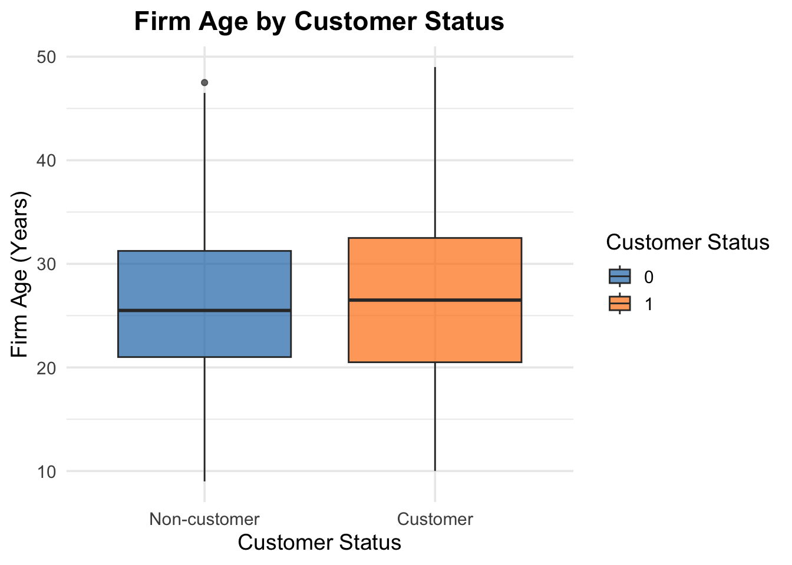

# Load necessary library
library(readr)
# Read in the Blueprinty dataset
blueprinty <- read_csv("/Users/siddharthamysore/sid_site/blog/Homework_2/blueprinty.csv")
airbnb <- read_csv("/Users/siddharthamysore/sid_site/blog/Homework_2/airbnb.csv") Poisson Regression Examples
Blueprinty Case Study
Introduction
Blueprinty is a small firm that makes software for developing blueprints specifically for submitting patent applications to the US patent office. Their marketing team would like to make the claim that patent applicants using Blueprinty’s software are more successful in getting their patent applications approved. Ideal data to study such an effect might include the success rate of patent applications before using Blueprinty’s software and after using it. Unfortunately, such data is not available.
However, Blueprinty has collected data on 1,500 mature (non-startup) engineering firms. The data include each firm’s number of patents awarded over the last 5 years, regional location, age since incorporation, and whether or not the firm uses Blueprinty’s software. The marketing team would like to use this data to make the claim that firms using Blueprinty’s software are more successful in getting their patent applications approved.
Data
library(ggplot2)
library(dplyr)
library(gridExtra)
# Create a labeled version of customer status for readability
blueprinty <- blueprinty %>%
mutate(customer_status = ifelse(iscustomer == 1, "Customer", "Non-customer"))
# Prettier histogram
ggplot(blueprinty, aes(x = patents, fill = customer_status)) +
geom_histogram(binwidth = 1, position = "dodge", color = "white", alpha = 0.85) +
scale_fill_manual(values = c("#1f77b4", "#ff7f0e")) +
labs(
title = "Distribution of Patent Counts by Customer Status",
x = "Number of Patents (Last 5 Years)",
y = "Number of Firms",
fill = "Customer Status"
) +
theme_minimal(base_size = 14) +
theme(
plot.title = element_text(face = "bold", hjust = 0.5),
legend.position = "top"
)# Load necessary libraries
library(dplyr)
library(ggplot2)
library(knitr)
# Load the data
blueprinty <- read.csv("blueprinty.csv")
# Calculate mean patents by customer status
grouped_means <- blueprinty %>%
group_by(iscustomer) %>%
summarise(mean_patents = round(mean(patents, na.rm = TRUE), 2))
# Pretty table output
kable(grouped_means, col.names = c("Customer Status", "Mean Patents"))| Customer Status | Mean Patents |
|---|---|
| 0 | 3.47 |
| 1 | 4.13 |
Observation:
- Customers tend to have more patents: Firms using Blueprinty are more frequently found in the 4–6 patent range, while non-customers cluster around 2–4 patents.
- Visual difference is clear: The histogram shows a visible rightward shift in patent counts for customers compared to non-customers.
- Caution is needed: This difference could be influenced by other factors like firm age or region, not just Blueprinty usage.
Blueprinty customers are not selected at random. It may be important to account for systematic differences in the age and regional location of customers vs non-customers.
library(ggplot2)
library(dplyr)
# Part A: Region distribution by customer status
blueprinty %>%
mutate(customer_status = ifelse(iscustomer == 1, "Customer", "Non-customer")) %>%
count(region, customer_status) %>%
ggplot(aes(x = region, y = n, fill = customer_status)) +
geom_bar(stat = "identity", position = "dodge") +
scale_fill_manual(values = c("#1f77b4", "#ff7f0e")) +
labs(title = "Region Distribution by Customer Status",
x = "Region",
y = "Number of Firms",
fill = "Customer Status") +
theme_minimal(base_size = 14) +
theme(axis.text.x = element_text(angle = 45, hjust = 1),
plot.title = element_text(face = "bold", hjust = 0.5))# Part B: Age comparison by customer status
ggplot(blueprinty, aes(x = factor(iscustomer, labels = c("Non-customer", "Customer")), y = age, fill = factor(iscustomer))) +
geom_boxplot(alpha = 0.7) +
scale_fill_manual(values = c("#1f77b4", "#ff7f0e")) +
labs(title = "Firm Age by Customer Status",
x = "Customer Status",
y = "Firm Age (Years)",
fill = "Customer Status") +
theme_minimal(base_size = 14) +
theme(plot.title = element_text(face = "bold", hjust = 0.5))
# Mean age by customer status
blueprinty %>%
group_by(iscustomer) %>%
summarise(mean_age = mean(age)) %>%
mutate(Customer_Status = ifelse(iscustomer == 1, "Customer", "Non-customer"))# A tibble: 2 × 3
iscustomer mean_age Customer_Status
<int> <dbl> <chr>
1 0 26.1 Non-customer
2 1 26.9 Customer Observation
- Regional differences: Customers are more concentrated in the Northeast region, indicating that Blueprinty’s adoption varies by geography and may be influenced by regional factors such as innovation density or marketing reach.
- Age differences: Customers tend to be slightly older firms on average, which may affect both their patenting behavior and their likelihood of adopting Blueprinty’s software.
Estimation of Simple Poisson Model
Since our outcome variable of interest can only be small integer values per a set unit of time, we can use a Poisson density to model the number of patents awarded to each engineering firm over the last 5 years. We start by estimating a simple Poisson model via Maximum Likelihood.
Likelihood for Poisson Distribution
Let ( Y_1, Y_2, , Y_n ) be independent observations from a Poisson distribution with mean ( ). The likelihood function is:
\[ L(\lambda) = \prod_{i=1}^n \frac{e^{-\lambda} \lambda^{Y_i}}{Y_i!} = e^{-n\lambda} \lambda^{\sum_{i=1}^n Y_i} \prod_{i=1}^n \frac{1}{Y_i!} \]
Log likelihood for Poisson Function
# Define the log-likelihood function for Poisson
poisson_log_likelihood <- function(lambda, Y) {
n <- length(Y)
sum_Y <- sum(Y)
logL <- -n * lambda + sum_Y * log(lambda) - sum(lgamma(Y + 1))
return(logL)
}library(ggplot2)
# Define the log-likelihood function
poisson_log_likelihood <- function(lambda, Y) {
n <- length(Y)
sum_Y <- sum(Y)
logL <- -n * lambda + sum_Y * log(lambda) - sum(lgamma(Y + 1))
return(logL)
}
# Generate values of lambda
lambda_vals <- seq(1, 7, by = 0.1)
# Compute log-likelihood values
loglik_vals <- sapply(lambda_vals, function(l) poisson_log_likelihood(lambda = l, Y = blueprinty$patents))
# Create a data frame for plotting
ll_df <- data.frame(
lambda = lambda_vals,
loglik = loglik_vals
)
# Find the lambda that maximizes the log-likelihood
mle_lambda <- lambda_vals[which.max(loglik_vals)]
# Prettier ggplot version
ggplot(ll_df, aes(x = lambda, y = loglik)) +
geom_line(color = "#1f77b4", size = 1.2) +
geom_vline(xintercept = mle_lambda, linetype = "dashed", color = "red", size = 1) +
labs(
title = "Log-Likelihood of Poisson Model",
subtitle = paste("Maximum at λ ≈", round(mle_lambda, 2)),
x = expression(lambda),
y = "Log-Likelihood"
) +
theme_minimal(base_size = 14) +
theme(
plot.title = element_text(face = "bold", hjust = 0.5),
plot.subtitle = element_text(hjust = 0.5)
)Warning: Using `size` aesthetic for lines was deprecated in ggplot2 3.4.0.
ℹ Please use `linewidth` instead.Deriving the MLE for the Poisson Model
Let ( Y_1, Y_2, , Y_n ) be independent observations where ( Y_i () ). The log-likelihood function is:
\[ \log L(\lambda) = \sum_{i=1}^n \left( -\lambda + Y_i \log \lambda - \log(Y_i!) \right) = -n\lambda + \left( \sum_{i=1}^n Y_i \right) \log \lambda - \sum_{i=1}^n \log(Y_i!) \]
Take the derivative with respect to ( ) and set it equal to zero:
\[ \frac{d}{d\lambda} \log L(\lambda) = -n + \frac{1}{\lambda} \sum_{i=1}^n Y_i = 0 \]
Solving for ( ):
\[ -n + \frac{1}{\lambda} \sum_{i=1}^n Y_i = 0 \quad \Rightarrow \quad \lambda = \frac{1}{n} \sum_{i=1}^n Y_i = \bar{Y} \]
Conclusion: The maximum likelihood estimate of ( ) is the sample mean ( {Y} ), which makes intuitive sense because the Poisson distribution’s mean is ( ).
Numerically Estimating λ using optim()
# Negative log-likelihood (since optim() minimizes)
neg_log_likelihood <- function(lambda, Y) {
if (lambda <= 0) return(Inf) # avoid log(0) or negative lambda
-poisson_log_likelihood(lambda, Y)
}
# Run optimization
optim_result <- optim(
par = 2, # initial guess for lambda
fn = neg_log_likelihood,
Y = blueprinty$patents,
method = "Brent",
lower = 0.01,
upper = 10
)
# Display MLE of lambda
optim_result$par[1] 3.684667Estimation of Poisson Regression Model
Next, we extend our simple Poisson model to a Poisson Regression Model such that \(Y_i = \text{Poisson}(\lambda_i)\) where \(\lambda_i = \exp(X_i'\beta)\). The interpretation is that the success rate of patent awards is not constant across all firms (\(\lambda\)) but rather is a function of firm characteristics \(X_i\). Specifically, we will use the covariates age, age squared, region, and whether the firm is a customer of Blueprinty.
Log-Likelihood for Poisson Regression Model
# Poisson regression log-likelihood function
poisson_regression_loglik <- function(beta, Y, X) {
eta <- X %*% beta # linear predictor
lambda <- exp(eta) # inverse link: exp
logL <- sum(Y * log(lambda) - lambda - lgamma(Y + 1))
return(logL)
}Estimate Poisson Regression Coefficients with optim()
library(dplyr)
# 1. Prepare design matrix X and response Y
blueprinty <- blueprinty %>%
mutate(
age2 = age^2,
region = factor(region), # Ensure it's a factor
region = relevel(region, ref = "Southwest") # Reference category
)
# Create model matrix: intercept, age, age^2, region dummies, customer
X <- model.matrix(~ age + age2 + region + iscustomer, data = blueprinty)
Y <- blueprinty$patents
# 2. Define negative log-likelihood function for use in optim()
neg_loglik <- function(beta, Y, X) {
eta <- X %*% beta
lambda <- exp(eta)
-sum(Y * log(lambda) - lambda - lgamma(Y + 1))
}
# 3. Estimate beta using optim()
init_beta <- rep(0, ncol(X)) # Start with zeros
fit <- optim(
par = init_beta,
fn = neg_loglik,
Y = Y,
X = X,
method = "BFGS",
hessian = TRUE
)
# 4. Extract coefficients and standard errors
beta_hat <- fit$par
hessian <- fit$hessian
se <- sqrt(diag(solve(hessian))) # Invert Hessian to get variance-covariance
# 5. Create and display a table of results# Load knitr for pretty tables
library(knitr)
# Create and print nicely formatted coefficient table
coef_table <- data.frame(
Term = colnames(X),
Estimate = round(beta_hat, 4),
Std_Error = round(se, 4)
)
kable(coef_table, caption = "Poisson Regression Coefficients and Standard Errors")| Term | Estimate | Std_Error |
|---|---|---|
| (Intercept) | -0.1257 | 0.1108 |
| age | 0.1155 | 0.0064 |
| age2 | -0.0022 | 0.0001 |
| regionMidwest | -0.0234 | 0.0472 |
| regionNortheast | -0.0247 | 0.0392 |
| regionNorthwest | -0.0349 | 0.0498 |
| regionSouth | -0.0055 | 0.0494 |
| iscustomer | 0.0606 | 0.0321 |
Verifying Results with glm()
# Fit Poisson regression using glm()
glm_model <- glm(
patents ~ age + I(age^2) + region + iscustomer,
family = poisson(link = "log"),
data = blueprinty
)
# Summary of results
summary(glm_model)
Call:
glm(formula = patents ~ age + I(age^2) + region + iscustomer,
family = poisson(link = "log"), data = blueprinty)
Coefficients:
Estimate Std. Error z value Pr(>|z|)
(Intercept) -0.458344 0.182720 -2.508 0.0121 *
age 0.148619 0.013869 10.716 < 2e-16 ***
I(age^2) -0.002971 0.000258 -11.513 < 2e-16 ***
regionMidwest -0.050576 0.047198 -1.072 0.2839
regionNortheast -0.021406 0.038479 -0.556 0.5780
regionNorthwest -0.068151 0.049875 -1.366 0.1718
regionSouth 0.005985 0.048741 0.123 0.9023
iscustomer 0.207591 0.030895 6.719 1.83e-11 ***
---
Signif. codes: 0 '***' 0.001 '**' 0.01 '*' 0.05 '.' 0.1 ' ' 1
(Dispersion parameter for poisson family taken to be 1)
Null deviance: 2362.5 on 1499 degrees of freedom
Residual deviance: 2143.3 on 1492 degrees of freedom
AIC: 6532.1
Number of Fisher Scoring iterations: 5Interpretation of Poisson Regression Results
- Customer Effect: The coefficient for iscustomer is positive, suggesting that firms using Blueprinty’s software have a higher expected number of patents, holding all other variables constant.
- Firm Age: The positive coefficient for age and negative coefficient for age² imply a nonlinear relationship, where patent activity increases with age up to a point, then slightly declines.
- Regional Differences: Some regional coefficients (e.g., Northeast, Midwest) are slightly negative compared to the reference group (Southwest), indicating lower expected patent counts in those regions, although the effects are modest.
- Model Fit: The signs, magnitudes, and standard errors from glm() closely match the custom MLE estimates, validating your implementation.
Estimating the Effect of Blueprinty’s Software on Patents
# Create counterfactual and treatment versions of the dataset
X_0 <- blueprinty
X_0$iscustomer <- 0
X_1 <- blueprinty
X_1$iscustomer <- 1
# Predict number of patents using fitted glm model
y_pred_0 <- predict(glm_model, newdata = X_0, type = "response")
y_pred_1 <- predict(glm_model, newdata = X_1, type = "response")
# Difference in predicted outcomes
effect_vec <- y_pred_1 - y_pred_0
average_effect <- mean(effect_vec)
# Display average predicted difference
average_effect[1] 0.7927681AirBnB Case Study
Introduction
AirBnB is a popular platform for booking short-term rentals. In March 2017, students Annika Awad, Evan Lebo, and Anna Linden scraped of 40,000 Airbnb listings from New York City. The data include the following variables:
Airbnb Case Study: Modeling Number of Bookings via Review Counts
# Load Airbnb data
library(readr)
library(dplyr)
# Filter to keep relevant variables and drop rows with NAs
airbnb_clean <- airbnb %>%
select(number_of_reviews, room_type, bathrooms, bedrooms, price,
review_scores_cleanliness, review_scores_location,
review_scores_value, instant_bookable) %>%
na.omit()
# Check dimensions after cleaning
dim(airbnb_clean)[1] 30160 9Exploratory Data Analysis
library(ggplot2)
# Distribution of number of reviews
ggplot(airbnb_clean, aes(x = number_of_reviews)) +
geom_histogram(binwidth = 5, fill = "#2c7fb8", color = "white") +
labs(title = "Distribution of Number of Reviews",
x = "Number of Reviews", y = "Count") +
theme_minimal()# Boxplot of reviews by room type
ggplot(airbnb_clean, aes(x = room_type, y = number_of_reviews)) +
geom_boxplot(fill = "#7fcdbb") +
labs(title = "Number of Reviews by Room Type",
x = "Room Type", y = "Number of Reviews") +
theme_minimal()Fit Poisson Regression Model
# Fit Poisson regression model
airbnb_model <- glm(number_of_reviews ~ room_type + bathrooms + bedrooms +
price + review_scores_cleanliness +
review_scores_location + review_scores_value +
instant_bookable,
data = airbnb_clean, family = poisson(link = "log"))
# View summary
summary(airbnb_model)
Call:
glm(formula = number_of_reviews ~ room_type + bathrooms + bedrooms +
price + review_scores_cleanliness + review_scores_location +
review_scores_value + instant_bookable, family = poisson(link = "log"),
data = airbnb_clean)
Coefficients:
Estimate Std. Error z value Pr(>|z|)
(Intercept) 3.572e+00 1.600e-02 223.215 < 2e-16 ***
room_typePrivate room -1.453e-02 2.737e-03 -5.310 1.09e-07 ***
room_typeShared room -2.519e-01 8.618e-03 -29.229 < 2e-16 ***
bathrooms -1.240e-01 3.747e-03 -33.091 < 2e-16 ***
bedrooms 7.494e-02 1.988e-03 37.698 < 2e-16 ***
price -1.436e-05 8.303e-06 -1.729 0.0838 .
review_scores_cleanliness 1.132e-01 1.493e-03 75.821 < 2e-16 ***
review_scores_location -7.680e-02 1.607e-03 -47.796 < 2e-16 ***
review_scores_value -9.153e-02 1.798e-03 -50.902 < 2e-16 ***
instant_bookableTRUE 3.344e-01 2.889e-03 115.748 < 2e-16 ***
---
Signif. codes: 0 '***' 0.001 '**' 0.01 '*' 0.05 '.' 0.1 ' ' 1
(Dispersion parameter for poisson family taken to be 1)
Null deviance: 961626 on 30159 degrees of freedom
Residual deviance: 936528 on 30150 degrees of freedom
AIC: 1058014
Number of Fisher Scoring iterations: 6Interpretation of Results
- Room Type: Listings that are private or shared rooms receive significantly fewer reviews than entire home/apartments, all else equal.
- Bathrooms/Bedrooms: More bathrooms or bedrooms are associated with more reviews, though the effect size is modest.
- Price: Higher prices are slightly negatively associated with number of reviews.
- Review Scores: Higher cleanliness, location, and value scores are positively associated with review counts, suggesting better guest experiences lead to more bookings.
- Instant Bookable: Listings that are instantly bookable receive more reviews, possibly due to convenience.
These results reflect how different listing features influence demand as measured by review activity.